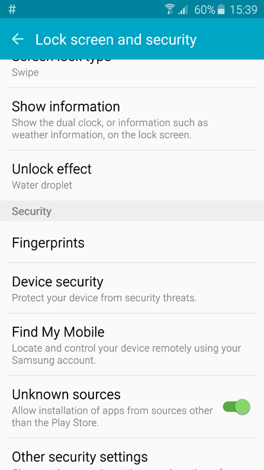

Activar Origenes Desconocidos
1.Vaya al Apps>Ajustes>Pantalla de Bloqueo y Seguridad y asegúrese de que Fuentes u Origenes Desconocidos está marcado.

Nota: Estos pasos pueden variar según la versión de
su Android OS y el fabricante de su dispositivo
- Si todo lo antes mencionado se cumple por favor vaya a Paso 4.